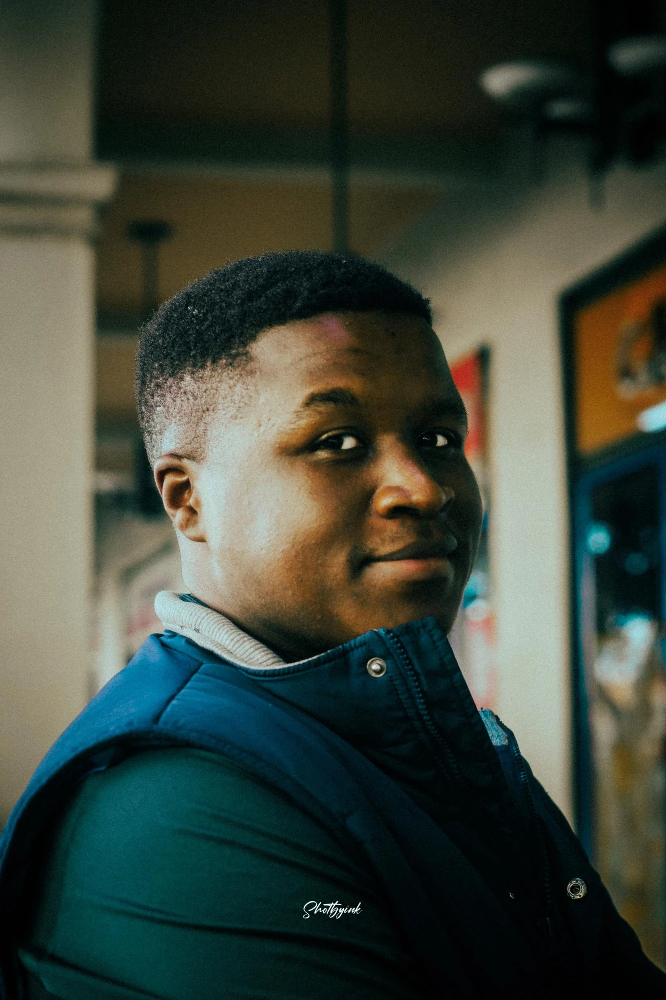
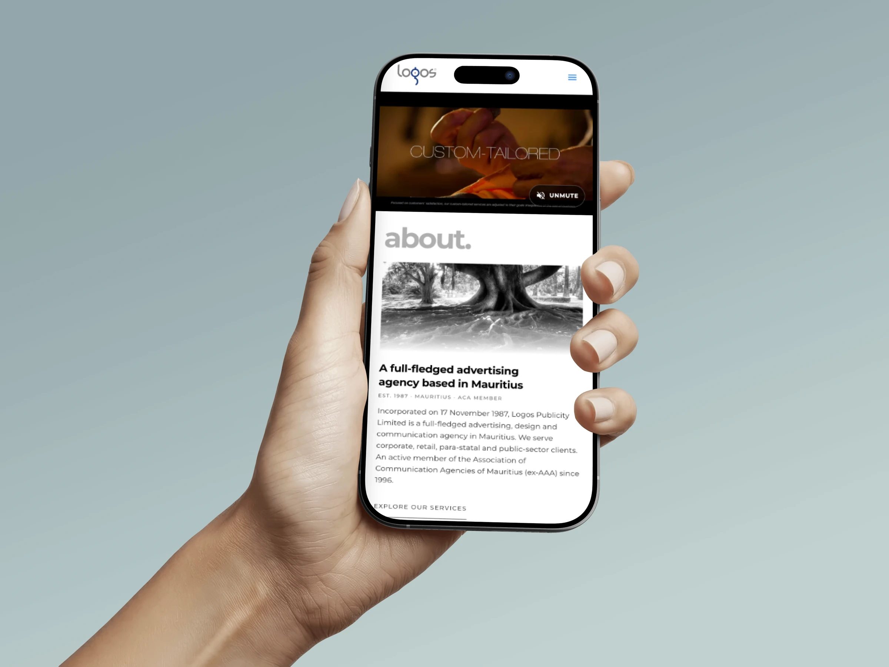
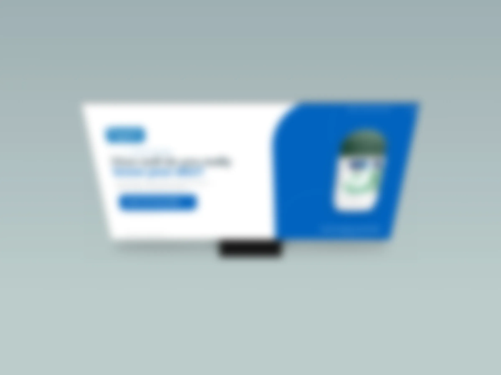
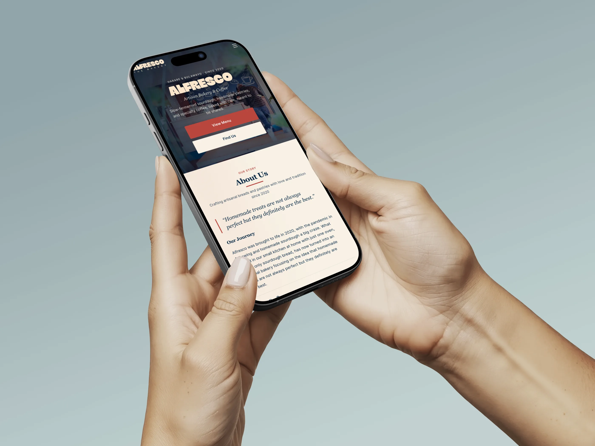
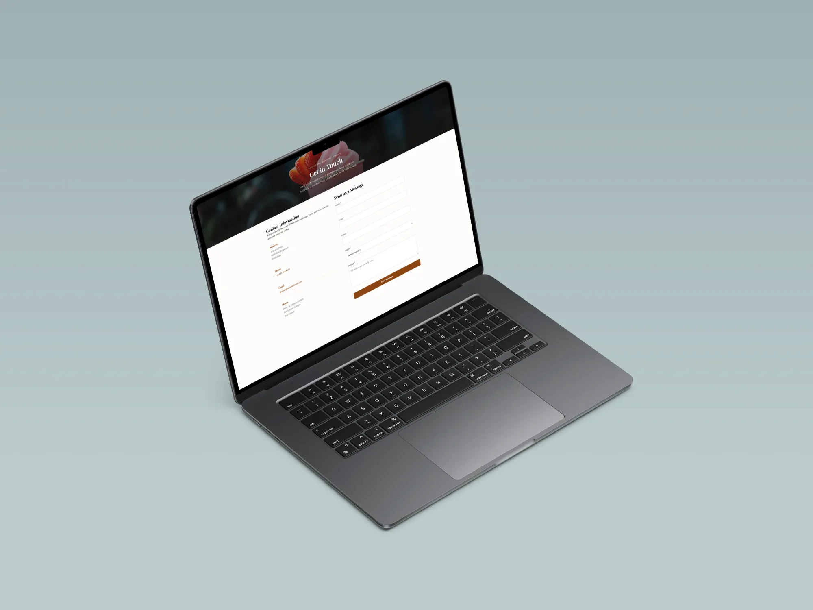
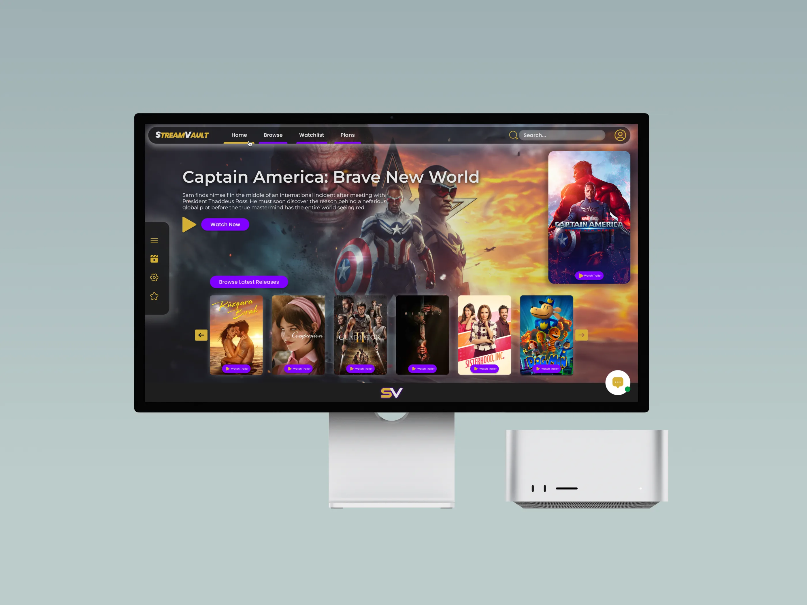

UX designer · Mauritius
I make digital things feel obvious.
I turn tangled journeys into clear, human experiences—from first sketch to shipped interface.
- Approach
- Curious, clear, practical
- Currently
- Open to UX opportunities

Designing for people,not perfect scenarios.
UX research✦Information architecture✦Prototyping✦Interface design✦Front-end thinking
01 / Selected work
Problems untangled.
Experiences made clearer.
Selected projects across agency, client, and product work. See everything →
Internship · Logos Publicity
-

01
Logos Publicity
Restructuring an agency website so visitors can find the right service without the guesswork.
UX strategy · IA · Web design -

Password protected02
Sanex
Making an exhibition questionnaire feel intuitive, quick, and engaging on a public display.
Interaction design · UX · In progress
Client work & projects
-

03
Alfresco Bakery
A warmer, easier path from browsing pastries to visiting the bakery in person.
Client website · UX · Live -

04
Verandah Café
Turning scattered café information into one confident, mobile-friendly visit hub.
UX · Content structure · Live -

05
Streamvault
Helping viewers spend less time deciding and more time watching across services.
Product design · UX/UI